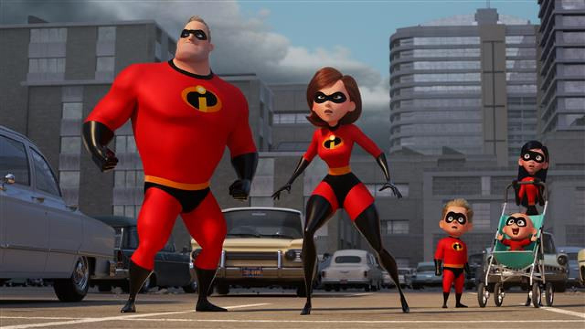
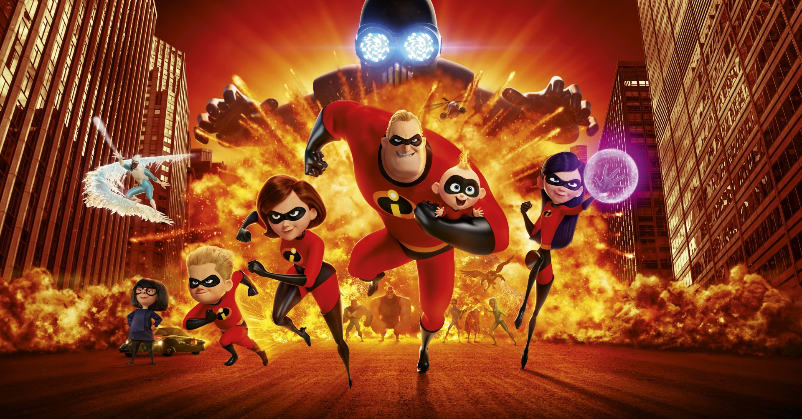
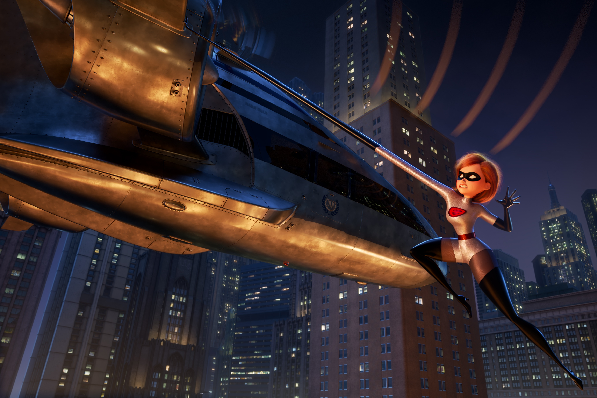

Incredibles 2 is a 2018 American computer-animated superhero film produced by Pixar Animation Studios and released by Walt Disney Pictures. Written and directed by Brad Bird, it is the sequel to The Incredibles (2004) and the second full-length installment of the franchise. The story follows the Parr family as they try to restore the public's trust in superheroes while balancing their family life, only to combat a new foe who seeks to turn the populace against all superheroes. Craig T. Nelson, Holly Hunter, Sarah Vowell and Samuel L. Jackson reprise their roles from the first film; newcomers to the cast include Huckleberry Milner, Bob Odenkirk, Catherine Keener and Jonathan Banks. Michael Giacchino returned to compose the score.
  